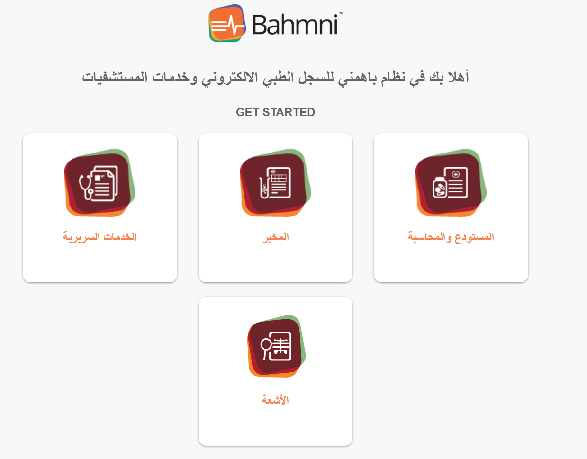
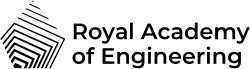
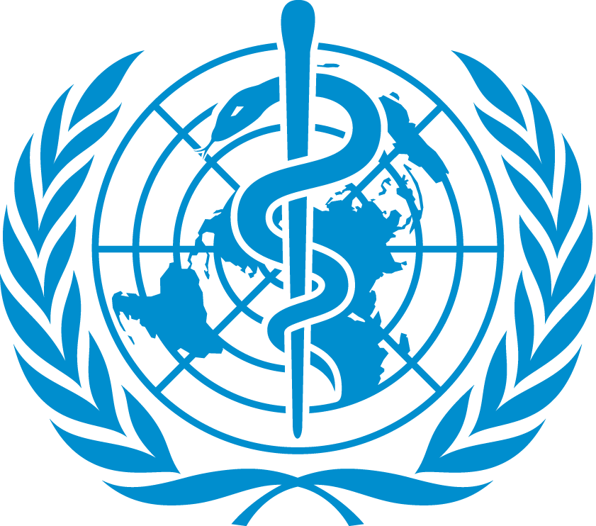
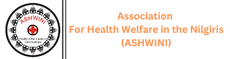

نظام سجلات طبية إلكترونية متكامل ومُعرَّب بالكامل بمستوى المستشفيات. مبني مع دعم كامل للغة العربية والكتابة من اليمين لليسار. تسجيل المرضى، الزيارات السريرية، المختبر، الصيدلية، التصوير الطبي، والفوترة. يخدم بفخر ملايين المرضى في المناطق ذات الدخل المنخفض في الشرق الأوسط. بدون رسوم ترخيص!
أدلة خطوة بخطوة لنشر نظام البهمني باللغة العربية في منشأتك
Step-by-step guides for deploying Bahmni RTL at your facility

سير عمل سريري ومخبري وصيدلاني وتصوير طبي وفوترة متكامل — معرّب بالكامل للغات التي تُكتب من اليمين لليسار.
واجهة سريرية معرّبة بالكامل، وحدات مخبرية، وجدولة مواعيد. عرض أصلي من اليمين لليسار عبر جميع التطبيقات.
تسجيل المرضى، الزيارات السريرية، التشخيص، الوصفات الطبية، وملخصات الخروج. مبني على OpenMRS — أكثر نظام سجلات طبية مفتوح المصدر انتشاراً في العالم.
إدارة طلبات المختبر، تتبع العينات، وإدخال النتائج عبر OpenELIS. مزامنة تلقائية مع سجلات المرضى.
صرف الأدوية، إدارة المخزون، والفوترة من خلال Odoo ERP. متكامل مع الطلبات السريرية عبر Atomfeed.
تخزين وعرض صور DICOM عبر DCM4CHEE. سير عمل أشعة كامل من الطلب إلى التقرير.
لوحات معلومات سريرية في Metabase، تقارير تشغيلية، ومراقبة النظام عبر Grafana + Loki.
بنية مستشفى كاملة مُنسَّقة عبر Docker Compose. تتواصل الخدمات عبر مزامنة Atomfeed المبنية على الأحداث.
جميع الخدمات تعمل كحاويات Docker. لا توجد أي متطلبات على المضيف سوى Docker Engine.
سواء كنت تنشر النظام في مستشفى أو تخصص البنية التقنية — نحن هنا لمساعدتك.
صورة نظام جاهزة مسبقاً. شغّلها، اضبط الشبكة، وابدأ العمل. لا حاجة لخبرة في Docker أو Linux.
انسخ مستودع Docker Compose وخصّصه. تحكم كامل في الخدمات والإعدادات والنشر.
حمّل تكاملات جاهزة لربط أجهزة التحليل المخبري مباشرة بنظام البهمني باللغة العربية. تنتقل النتائج من الجهاز إلى سجل المريض تلقائياً.
أجهزة تحليل الدم، الكيمياء الحيوية، تحليل البول، التخثر، والمناعة. برنامج وسيط جاهز للاستخدام مع قوالب إعداد لأجهزة المختبر الشائعة.
مفتوح المصدر · AGPL 3.0 · مساهمات المجتمع مرحب بها
كل ما تحتاجه لنشر وتهيئة وتوسيع نظام البهمني باللغة العربية.
تثبيت Docker خطوة بخطوة، التحقق من الخدمات، واستعادة قواعد البيانات بعد التثبيت لـ OpenMRS و OpenELIS و Odoo.
← bahmni-docker-RTLويكي البهمني الأصلي — ملفات التعريف، إعداد البيئة، إدارة الخدمات، واستكشاف الأخطاء.
← Bahmni Wikiالإعدادات الافتراضية للتعريب العربي — المفاهيم، النماذج، القوالب السريرية، وإعدادات اللغة.
← default-config-RTLتطبيقات البهمني مع عرض كامل من اليمين لليسار — لوحة المريض، الزيارات السريرية، والتسجيل.
← bahmniapps-RTLنظام معلومات مخبري معرّب بالعربية — تتبع العينات، إدخال النتائج، والتكامل مع OpenMRS.
← OpenElis-RTLوحدات Odoo بدعم RTL لصرف الأدوية والمخزون والفوترة المتكاملة مع الطلبات السريرية.
← odoo-modules-rtlالتوثيق الكامل الأصلي — البنية التقنية، أدلة المطورين، مرجع API، والإدارة.
← bahmni.atlassian.netتقارير سريرية وتشغيلية معرّبة بالعربية مع تكامل Jasper.
← bahmni-reports-RTLيرث نظام البهمني باللغة العربية تراخيص المصدر المفتوح من منظومة البهمني الأصلية. كل مكوّن مجاني للاستخدام والتعديل والتوزيع.
| المكوّن | الترخيص | النطاق |
|---|---|---|
| مكونات نظام البهمني باللغة العربية | AGPL 3.0 | واجهة RTL، تنسيق Docker، التقارير، التكاملات |
| Bahmni Core | AGPL 3.0 | التطبيقات السريرية، الوحدات، أتمتة النشر |
| OpenMRS | MPL 2.0 | منصة السجلات الطبية، سجلات المرضى، الزيارات السريرية |
| OpenELIS | AGPL 3.0 | نظام معلومات المختبر |
| Odoo Community (v10) | LGPL 3.0 | الصيدلية، الفوترة، ERP |
| DCM4CHEE | MPL / GPL / LGPL | التصوير DICOM، نظام PACS |
| Jasper Reports | LGPL | إنشاء التقارير |
جميع تعديلات ومكونات نظام البهمني باللغة العربية الجديدة صادرة تحت ترخيص AGPL 3.0، بما يتوافق مع البهمني الأصلي. راجع ملف LICENSE في كل مستودع للتفاصيل.



نشأ هذا المشروع من منحة حدود التنمية التابعة للأكاديمية الملكية للهندسة، لتكييف تقنيات الصحة مفتوحة المصدر للمجتمعات الناطقة بالعربية. مبني على البهمني — نظام السجلات الصحية الإلكترونية مفتوح المصدر بمستوى المؤسسات والموثوق به من منظمات الرعاية الصحية حول العالم.
نتقدم بالشكر الجزيل لـ منظمة الصحة العالمية و الأكاديمية الملكية للهندسة البريطانية لتمويل هذا المشروع وإتاحة الفرصة لجلب تقنيات المستشفيات مفتوحة المصدر إلى المجتمعات الأكثر حاجة إليها.
شكر خاص لـ Next Medtech، المؤسسة الاجتماعية التي قاد فريقها المكون من أكثر من ٣٠ طبيباً ومطور برمجيات في سوريا عملية التعريب والتطوير والنشر لنظام البهمني باللغة العربية — من بناء النسخة العربية RTL إلى تكامل سير العمل السريري ودعم عدة مستشفيات جامعية كبيرة في تبني النظام.
شكراً لشريكنا في التطوير IPLit لدورهم المهم في بناء نظام البهمني باللغة العربية ودعم نشره.
سواء كنت مستشفى أو منظمة غير حكومية أو وزارة صحة — تواصل معنا أو مع شريكنا في التنفيذ لمناقشة النشر في منطقتك.